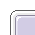
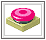
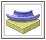
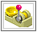

WhizzBall!
is all about puzzles. Either you can play the puzzles provided or you
can build your own puzzles and submit them to our server so whizzards
around the world can play them.
Click on the links below to find the information
that you need:
What
is a WhizzBall puzzle?
How do I play a WhizzBall puzzle?
How do I build a WhizzBall puzzle?
The building bricks

A WhizzBall! puzzle is made up of a grid, a drop funnel (where the ball begins its journey to the target), a target (where the ball should end up) and building bricks, which you'll find in the scrollable bar below the grid. The building bricks roll, bounce, direct, punch and throw the ball towards the target. (diagram)


It's simple: the aim of this game is to hit the target with the ball and win points. To do this takes three steps: load a puzzle, fill the grey tiles on the grid with the building bricks provided in the scrollable bar below the puzzle, then drop a ball down the drop funnel - and hope it hits the target. Of course, it's a little more complicated than that - and there are some rules too. But follow the simple steps below and soon you'll be puzzling your way to the WhizzBall! World Ranking System's top 100 whizzards!
Directions:
- First, pick a puzzle from the list. This list can be sorted in different categories by clicking on the tabs above the list table labelled 'date', 'author', 'title', 'difficulty', 'popularity' or 'random'.
- Use the building bricks to fill the grey tiles that lead from the drop funnel to the target.
- Click, drag and release the building bricks onto these grey tiles on the grid.
- To remove a building brick, simply click and drag it off the grid, then release. It will automatically go back to the scrollable bar.
- You can test the puzzle at any time while you're building it, just drop a ball down the drop funnel.
- When you've finished placing all the building bricks and are happy with your route, it's time to test your theory out. If you've placed the building bricks correctly, the ball will hit the target and you'll be awarded points.
- If the ball doesn't hit the target, rearrange the building bricks and try again.
- If you're stuck, you can click on 'Click for a Clue' - but it comes at a price. You'll be awarded less points when you've completed the puzzle!
- The puzzle is only complete when all the building bricks have been placed on the grid and the ball hits the target.

Why would you want to build a puzzle? Well, firstly, it's fun - and secondly, you can submit your puzzle to our server so it can be played by whizzards all over the world! Building a puzzle is easy: you get a grid, a scrollable bar below the grid with all the building bricks, a drop funnel and a target. Now you can start building. When the puzzle's complete, test it, and if the ball hits the target using all the building bricks, you can submit it. Just follow the easy directions below and soon you'll have submitted a puzzle for the whole world to play!
Directions:
- Click
on 'Build your own puzzle'.
- Click,
drag and release a drop funnel onto the grid (you can only place one
per puzzle).
- Click,
drag and release a target onto the grid (you can only place one per
puzzle).
- Click,
drag and release the building bricks onto the grid between the drop
funnel and the target.
- You
can rearrange any of the pieces on the grid at any time, just click
and drag them to a different position.
- You
can remove any of the pieces at any time by clicking and dragging them
off the grid.
-
Use as many building bricks as you like, but each building brick must
play a part in moving the ball towards the target. Unused building bricks
will be removed when you submit the map.
-
You can test your puzzle at any time and as many times as you like by
dropping a ball down the drop funnel and seeing if your route for the
ball works.
-
For a route to work, the ball must start at the drop funnel and end
by hitting the target.
-
If your route does not work, rearrange your bricks and test again.
-
A puzzle will only be accepted by our server if it works.
-
When your puzzle is ready, click 'submit' and simply follow the instructions.
- If you haven't finished your puzzle, but want to work on later, click 'save'. When you want to work on it again, click on 'Build your own puzzle', then click on 'load puzzle'.

The WhizzBall! building brick is cunningly designed to direct the ball from point A (the drop funnel) to point B (the target). Below, we describe what each brick can do:
| Drop
funnel Each puzzle has only one drop funnel. The ball must be dropped down the drop funnel to begin its route to the target. |
| Target Each puzzle has only one target. The point of the game is for the ball to hit the target. Then you'll be rewarded with points. |
| Rollers The rollers propel the ball in different directions. Use them to speed up or slow down the ball, or to change direction. Hint: use the rollers in conjunction with other building bricks (springs or boxing gloves) to make the ball bounce further. |
|  | Spring This gives the ball a bit of bounce, which is useful for clearing gaps and obstacles. Hint: The faster the ball rolls, the further it will jump. |
|  |
Tube These come in four different shapes. Use them to make a twist, a turn to get the ball rolling in the right direction. |
| Boxing
glove Knocks the ball right where you want it. The boxing glove is triggered when the ball hits the sensor spot in front of the glove-box. |
|  |
Catapult Let the ball fly with this powerful little apparatus! Don't forget, you can choose how far it lobs the ball by adjusting the lever (the handle with the round knob on the end). To adjust the lever, click on the knob and drag. |
| UFO Use the UFO and its two transmission pads for an extraterrestrial experience! The UFO will beam up the ball when it lands on the first pad, transmit it through space and release it on the second pad - still rolling in the same direction and at the same speed! |